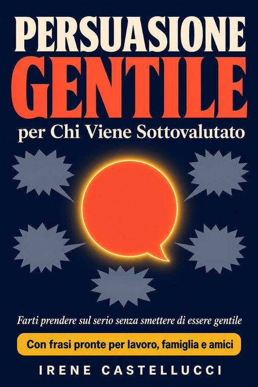

BONUS #1
Il kit anti-blocco
Dodici schede con le frasi pronte del libro e dodici sfondi per il telefono. Quando lì per lì non ti viene niente, ti bastano dieci secondi per ripassare quella giusta.

Ma non è tutto… Insieme al libro ricevi anche 3 REGALI Esclusivi GRATIS 🎁
Un sentito grazie per far parte di questo viaggio.
Lascia una recensione su AmazonBONUS #1
Dodici schede con le frasi pronte del libro e dodici sfondi per il telefono. Quando lì per lì non ti viene niente, ti bastano dieci secondi per ripassare quella giusta.
BONUS #2
Sette passi. Quindici minuti. La richiesta al capo, il no a un parente, l'aumento: ci arrivi con una mappa, invece di improvvisare proprio quando ti blocchi.
BONUS #3
Una piccola sfida al giorno. Cinque minuti la sera per scrivere com'è andata. Scoprirai che le reazioni vere degli altri sono quasi sempre più tranquille di quelle che temevi.
OFFERTA LIMITATA!
Scarica Persuasione Gentile per Chi Viene Sottovalutato con il pulsante qui sotto. Insieme al libro trovi subito anche i tuoi regali:
Quando l'hai letto, se ti va, scrivi una recensione sincera su Amazon: positiva o critica, ogni opinione onesta aiuta altri lettori a scegliere.
Il libro e i regali sono tuoi in ogni caso: clicca qui sotto per scaricare il tuo libro.
Scarica il tuo libro